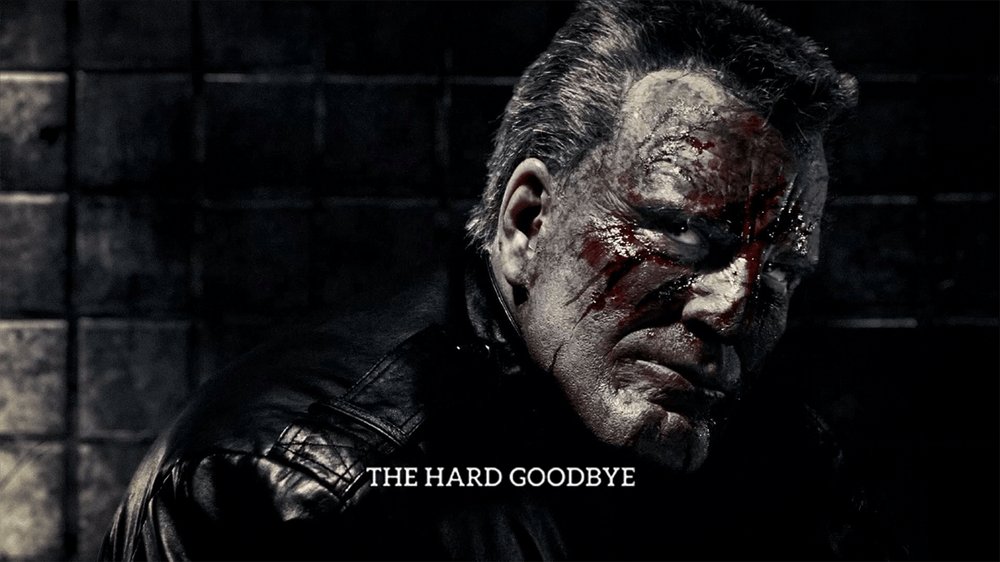
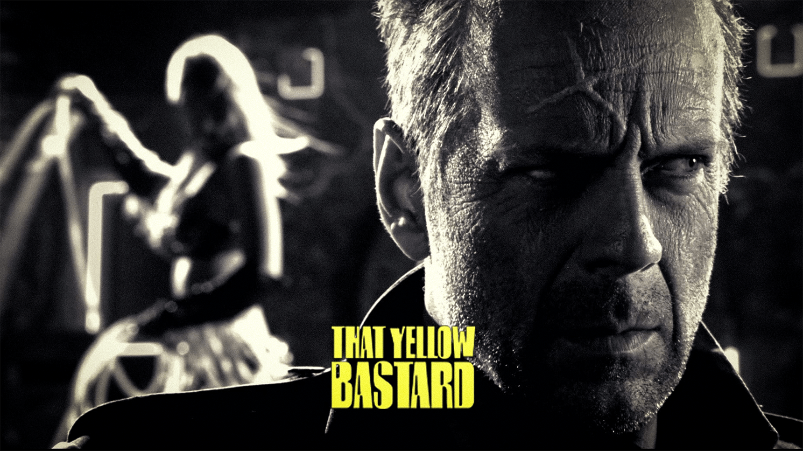
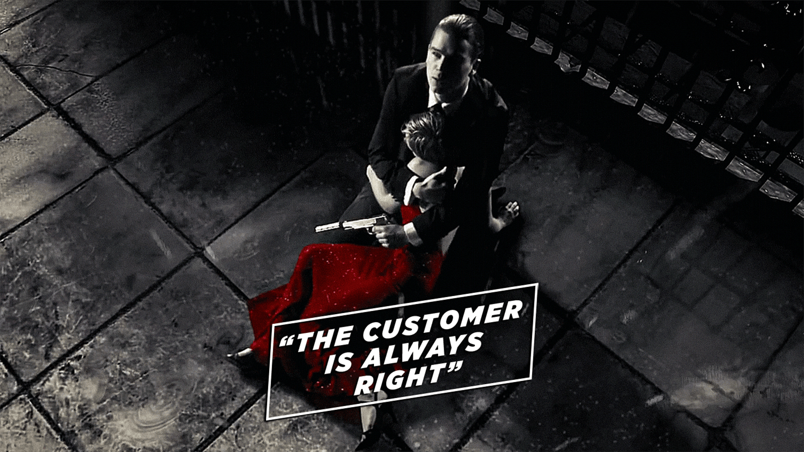
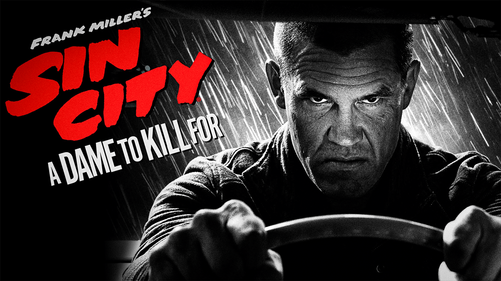
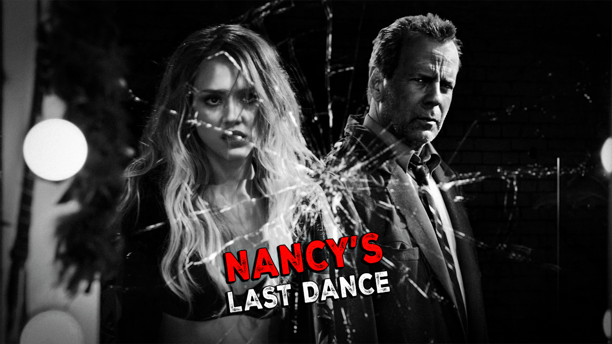
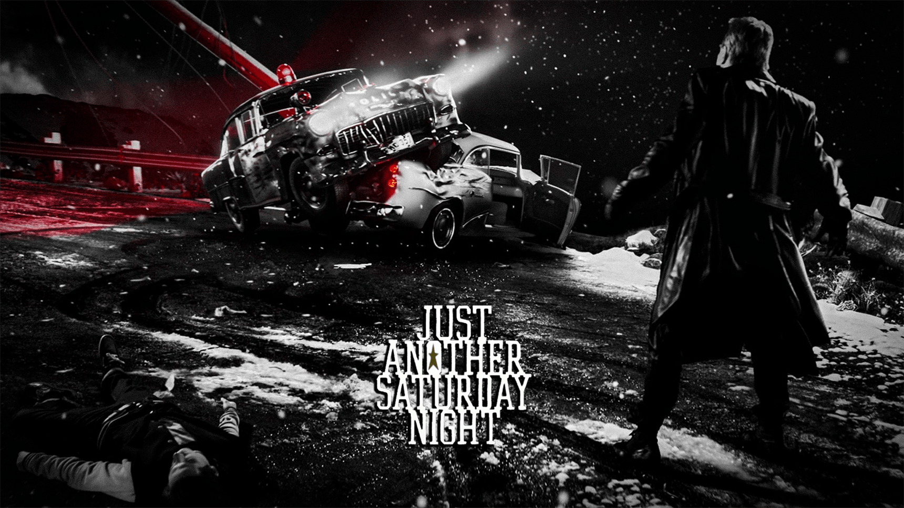
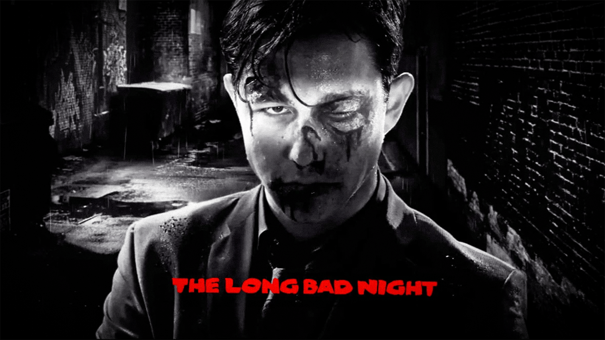

Onde tudo é preto e branco, mas o sangue pinta a cidade de vermelho.
- R$ 53,90*
- R$ 53,90*
*O preço pode variar ao longo do ano.
- 
- 
- 
- 
- 
- 
- 
Compre as HQs
-
HQs Adaptadas nos Filmes
R$ 300,00*
Aqui você leva os volumes:
• That Yellow Bastard
• A Dame to Kill For
• The Big Fat Kill
• The Hard Goodbye
-
 Todas as HQs
R$ 500,00*
Todas as HQs
R$ 500,00*
Aqui você leva os volumes:
• That Yellow Bastard
• A Dame to Kill For
• The Big Fat Kill
• The Hard Goodbye
• Booze, Broads & Bullets
• Hell and Back
• Family Values -
HQs Não Adaptadas nos Filmes
R$ 200,00*
Aqui você leva os volumes:
• Booze, Broads & Bullets
• Hell and Back
• Family Values
*O preço pode variar caso a compra seja feita através de outras plataformas.
Sin City
"Sin City" (2005), dirigido por Robert Rodriguez e Frank Miller, é uma adaptação estilosa das graphic novels de Miller, ambientada na corrupta Basin City. O filme utiliza um visual em preto e branco com toques de cor, explorando temas de vingança, justiça e traição através de três histórias interligadas: Marv vingando Goldie, Dwight em conflito com a máfia em Old Town, e Hartigan protegendo Nancy de um pedófilo. Com um elenco notável, o filme mistura live-action com elementos de quadrinhos para oferecer uma visão neo-noir sobre moralidade e corrupção.
Sin City: A Dame to Kill For
"Sin City: A Dame to Kill For" (2014), dirigido por Rodriguez e Miller, é a sequência que mantém a estética em preto e branco com toques de cor. Ambientado em Basin City, o filme segue histórias de Marv, Dwight, e Nancy Callahan, explorando vingança, traição e obsessão. Com um elenco que inclui novos e antigos atores como Josh Brolin e Eva Green, o filme continua o estilo neo-noir e a narrativa visualmente impressionante da franquia.
Assista nos seus dispositivos favoritos
-

Computador
- Chrome OS
- MacOS
- PC Windows
-

TV
- Amazon Fire TV
- Android TV
- Apple TV
- Chromecast
- TVs LG
- Roku
- Samsung
-

Videogames
- PS4
- PS5
- Xbox One
- Xbox Series X
- Xbox Series S
-

Celulares e tablets
- Tablets Amazon Fire
- Celulares e Tablets Android
- iPhone e iPad
Perguntas frequentes
-
Qual é a principal diferença estilística entre os filmes?Ambos os filmes mantêm a icônica estética em preto e branco com toques seletivos de cor, mas "Sin City: A Dame to Kill For" introduz algumas sequências em 3D, o que não estava presente no primeiro filme, oferecendo uma experiência visual ligeiramente diferente. Além disso, a sequência tem um tom um pouco mais sombrio e refinado, refletindo a evolução visual e narrativa desde o primeiro filme.
-
"Sin City: A Dame to Kill For" é uma sequência direta do primeiro filme?Embora "Sin City: A Dame to Kill For" continue a explorar a mesma cidade corrupta de Basin City e alguns dos mesmos personagens, ele não é uma sequência direta no sentido tradicional. O filme apresenta uma mistura de histórias que ocorrem antes, durante e depois dos eventos do primeiro filme. Algumas tramas são prequelas, enquanto outras continuam ou expandem histórias do primeiro filme, mantendo a estrutura de contos interligados.
-
Como os personagens de "Sin City" e "Sin City: A Dame to Kill For" se conectam?Vários personagens recorrentes conectam os dois filmes, mantendo a continuidade do universo de Sin City. Por exemplo, Marv, interpretado por Mickey Rourke, aparece em ambas as produções, embora em "A Dame to Kill For" ele esteja mais em flashbacks, já que sua história principal foi concluída no primeiro filme. Nancy Callahan, interpretada por Jessica Alba, tem seu arco narrativo expandido na sequência, lidando com as consequências da morte de Hartigan. Dwight, que foi interpretado por Clive Owen no primeiro filme, é reprisado por Josh Brolin na sequência, mostrando uma transição de atores mas mantendo a essência do personagem. Além disso, novos personagens como Johnny (Joseph Gordon-Levitt) são introduzidos, mas suas histórias se entrelaçam com os temas e personagens estabelecidos, criando uma rica tapeçaria de narrativas interconectadas.
-
Qual é a classificação indicativa dos filmes e por quê?Ambos os filmes, "Sin City" (2005) e "Sin City: A Dame to Kill For" (2014), receberam a classificação indicativa de 18 anos. Esta classificação se deve ao conteúdo altamente violento, com cenas gráficas de brutalidade e sangue, além de temas adultos como nudez, linguagem explícita, uso de drogas, e representações de atividade sexual. A estética visual do filme, que destaca o sangue e outros elementos em cores vibrantes contra um fundo predominantemente preto e branco, intensifica a percepção da violência, tornando-a ainda mais impactante e, portanto, inadequada para menores de idade.